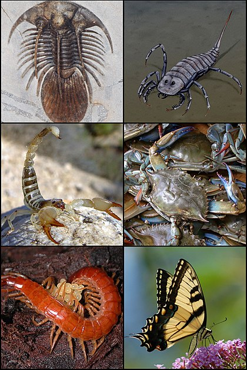

Artropodele (din greacă arthron, "articulație" și podos, "picior") sunt animale nevertebrate, ce au membrele articulate. Încrengătura include insecte, milipede, centipede, arahnide, crustacee. Artropodele sunt organisme cu un exoschelet, corp segmentat și membre anexate de cap și torace. Primele membre participă la apucarea hrănii și fărâmițarea.
Artropodele reprezinta un grup foarte numeros de specii, al caror numar depaseste un milion. Ele se afla raspandite pe toata suprafata Pamantului, fiind intalnite in toate mediile de viata.
Ele populează cele mai diverse ecosisteme: terestre, marine, aeriene.
Artropodele sunt nevertebrate cu corpul segmentat și membre articulate. Membrele la fel ca și corpul sunt acoperite cu cuticulă, care este alcătuită în principal din α-chitină, un derivat al glucozei. Pe lângă aceste trăsături, artropodele se caraterizează prin simetrie bilaterală, posedă un creier dorsal de care e conectat lanțul nervos central ce străbate corpul longitudinal.
Sistemul nervos este ganglionar, asemănător cu al viermilor inelați, iar organele de simț sunt destul de bine dezvoltate, fiind reprezentate prin ochi simpli (oceli), sau compuși, organe senzoriale tactile, olfactive si gustative.
La artropode apar picioare articulate, care perfectionează deplasarea.
Insectele se deplasează prin târăre, mers, salturi sau alergat, în funcție de mediul de viață. Insectele acvatice fug pe suprafaţa apei, văslesc cu partea abdominală, care stă in apă, sau se scufundă şi înoată, de exemplu larvele de țânțari, de libelule şi ploșnitele de apă. Coropişnita are prima pereche de picioare adaptate pentru săpat, musca de casă are picioarele terminate cu discuri adezive, ceea ce îi permite sa meargă pe suprafețe plane şi lucioase. Albinele lucrătoare sunt considerate cele mai bune zburătoare.
Dintre crustacee, racul de râu înoată înapoi, prin îndoirea în jos şi înainte a abdomenului,cu înotătoarea codală. Mişcarea este bruscă şi de aceea se formează un jet de apă care împinge corpul înainte.
Aparatul digestiv este reprezentat printr-un tub digestiv, ale cărui segmente sunt adaptate naturii hranei, si prin glande anexe ale tubului digestiv.
Hrana este de natură vegetală sau animală, avand diferențiat un aparat bucal, adecvat acesteia.
Respirația este traheală, branhială, pulmonară sau cutanată, depinzand de mediul de viață. Aceste formațiuni sunt de origine ectodermică. Traheele sunt niște tuburi foarte ramificate, care alcătuiesc un sistem traheal. În interiorul lor se află un fir chitinos, spiralat care le ține deschise.
Înmulțirea este sexuata. Sexele sunt separate, masculii deosebindu-se de femele prin unele caractere morfologice, observându-se astfel un dimorfism sexual. Trebuie reținut faptul că unele artropode se înmulțesc prin ouă nefecundate, fenomen numit partogeneza.
-
Artropode cu chelicere (păianjeni, scorpioni, căpușe)
- au corpul alcătuit din cefalotorace și abdomen
- la nivelul cefalotoracelui se găsesc 8 ochi simpli (oceli), 2 chelicere și 4 perechi de picioare
- respirația este traheală și pulmonară
Exemple: Văduva neagră (Latrodectus mactans), Scorpionul imperial (Pandinus imperator), Ixodes scapularis
-
Artropode cu antene (crustacee, miriapode, insecte)
Exemple: Crabul potcoavă (Xiphosura), Scutigera coleoptrata, Musculița de oțet (Drosophila melanogaster)